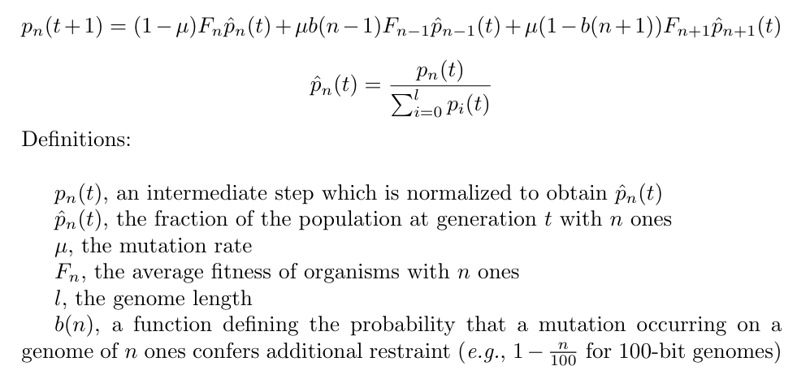

Section 10 Infinite population experiments
10.1 Finite genome experiment
The population size experiment showed that increasing population size also increases selection pressure and leads to the evolution of larger restraint buffers. However, even at a population size of 2,000 individuals, we still see the turning point in evolved restraint. To determine if an even higher population size would prevent the turning point trend, we created a population genetics model to simulate an infinite population. For each replicate, we ran an independent set of 100 fitness samples at each restraint buffer. These samples were then plugged into the following formula: 
The simulation script, plotting script, and timing data for this experiment can be found under 2021_03_07__inf_population/ in the experiments directory of the git repository.
10.1.1 Plots
Here we show the evolved restraint buffer values at the end of 10,000 generations.
Thus, even with an infinite population and the higher selective pressures that come with it, we still see the turning point trend in the evolved restraint buffer values.
We hypothesize that the surprisingly high restraint buffers seen in the 16x16 treatment are an artifact of the greater variation in fitness samples for the smallest organisms (see Figure 5 in the paper).
10.1.2 Statistics
First, we load and prep the data:
size_vec = c(16, 32, 64, 128, 256, 512)
num_samples = 3000
num_batches = 30
batch_size = num_samples / num_batches
max_gen = 10000
# Load data
df_finite = NA
for(size in size_vec){
for(batch_id in 1:num_batches){
if(!is.data.frame(df_finite)){
df_finite = read.csv(paste0('../experiments/2021_03_07__inf_population/simulation/data/size_', size, '__batch_', batch_id, '.csv'))
df_finite$batch_id = batch_id
} else{
df_finite_tmp = read.csv(paste0('../experiments/2021_03_07__inf_population/simulation/data/size_', size, '__batch_', batch_id, '.csv'))
df_finite_tmp$batch_id = batch_id
df_finite = rbind(df_finite, df_finite_tmp)
}
}
}
# Summarize data, grabbing the mean from the simulation
df_finite_summary = data.frame(data = matrix(nrow = 0, ncol = 4))
colnames(df_finite_summary) = c('mc_size', 'generation', 'mean_ones', 'batch_id')
for(size in size_vec){
size_mask = df_finite$mc_size == size
for(batch_id in unique(df_finite$batch_id)){
mask = size_mask & df_finite$batch_id == batch_id
for(gen in unique(df_finite$generation)){
df_finite_summary[nrow(df_finite_summary) + 1,] = c(size, gen, weighted.mean(0:100, df_finite[mask & df_finite$generation == gen,]$frac_of_pop), batch_id)
}
}
}
# Trim to final generation
df_finite_summary = df_finite_summary[df_finite_summary$generation == max_gen,]
# Rename column
df_finite_summary$restraint_value = df_finite_summary$mean_ones Next, we perform a Kruskal-Wallis test across all organism sizes to indicate if variance exists. If variance exists, we then perform a pairwise Wilcoxon Rank-Sum test to show which pairs of organism sizes significantly differ. Finally, we perform Bonferroni-Holm corrections for multiple comparisons.
res = kruskal.test(df_finite_summary$restraint_value ~ df_finite_summary$mc_size, df_finite_summary)
df_kruskal = data.frame(data = matrix(nrow = 0, ncol = 3))
colnames(df_kruskal) = c('p_value', 'chi_squared', 'df')
df_kruskal[nrow(df_kruskal) + 1,] = c(res$p.value, as.numeric(res$statistic)[1], as.numeric(res$parameter)[1])
df_kruskal$less_0.01 = df_kruskal$p_value < 0.01
print(df_kruskal)## p_value chi_squared df less_0.01
## 1 6.864684e-27 132.5438 5 TRUEWe see that significant variation exists, so we perform pairwise Wilcoxon tests on each to see which pairs of sizes are significantly different.
# Calculate stats
df_finite_wilcox = data.frame(data = matrix(nrow = 0, ncol = 5))
adjacent_counter = 0
colnames(df_finite_wilcox) = c('size_a', 'size_b', 'p_value_corrected', 'p_value_raw', 'W')
for(size_idx_a in 1:(length(size_vec) - 1)){
size_a = size_vec[size_idx_a]
size_a_str = paste0(size_a, 'x', size_a)
for(size_idx_b in (size_idx_a + 1):length(size_vec)){
size_b = size_vec[size_idx_b]
size_b_str = paste0(size_b, 'x', size_b)
res = wilcox.test(
df_finite_summary[df_finite_summary$mc_size == size_a,]$restraint_value,
df_finite_summary[df_finite_summary$mc_size == size_b,]$restraint_value,
alternative = 'two.sided')
df_finite_wilcox[nrow(df_finite_wilcox) + 1,] = c(size_a_str, size_b_str, 0, res$p.value, as.numeric(res$statistic)[1])
}
}
df_finite_wilcox$p_value_corrected = p.adjust(df_finite_wilcox$p_value_raw, method = 'holm')
df_finite_wilcox$label = 'ns'
df_finite_wilcox[df_finite_wilcox$p_value_corrected <= 0.05,]$label = '*'
df_finite_wilcox[df_finite_wilcox$p_value_corrected <= 0.01,]$label = '**'
df_finite_wilcox[df_finite_wilcox$p_value_corrected <= 0.001,]$label = '***'
print(df_finite_wilcox)## size_a size_b p_value_corrected p_value_raw W label
## 1 16x16 32x32 9.060257e-02 0.0906025723531084 335 ns
## 2 16x16 64x64 2.321832e-04 7.73943915506614e-05 191 ***
## 3 16x16 128x128 3.698987e-07 7.39797408170052e-08 111 ***
## 4 16x16 256x256 2.057755e-07 3.42959129633882e-08 104 ***
## 5 16x16 512x512 1.039919e-04 2.59979796766096e-05 176 ***
## 6 32x32 64x64 2.542063e-11 3.63151836599917e-12 40 ***
## 7 32x32 128x128 2.536685e-16 1.69112338921448e-17 0 ***
## 8 32x32 256x256 2.536685e-16 1.69112338921448e-17 0 ***
## 9 32x32 512x512 2.536685e-16 1.69112338921448e-17 0 ***
## 10 64x64 128x128 2.536685e-16 1.69112338921448e-17 0 ***
## 11 64x64 256x256 2.536685e-16 1.69112338921448e-17 0 ***
## 12 64x64 512x512 2.823500e-13 3.52937451329061e-14 19 ***
## 13 128x128 256x256 6.387082e-03 0.00319354081859395 253 **
## 14 128x128 512x512 2.536685e-16 1.69112338921448e-17 900 ***
## 15 256x256 512x512 2.536685e-16 1.69112338921448e-17 900 ***10.2 Infinite genome experiment
Knowing that an infinite population alone is not enough to negate the turning point trend, we then reran the infinite population model with an infinite genome.
Functionally this experiment is identical to the one above, the only difference is that we now feed in new fitness data calculated using the infinite genome model (fitness data was calculated from restraint buffer values of -100 to 550, which preliminary experiments showed was sufficient).
Additionally, the probability that a mutation reduces restraint is locked at 60% (i.e., b(n) = 0.4).
The simulation script, plotting script, and timing data for this experiment can be found under 2021_03_08__inf_genome_inf_pop/ in the experiments directory of the git repository.
10.2.1 Plots
Here we show the evolved restraint buffer values at the end of 10,000 generations.

Thus, we see that using both an infinite genome and an infinite population (and thus increasing selective pressure while decreasing mutational pressure) is enough to see evolved restraint buffers continuously increase with organism size.
Similar to the finite population treatment above, we hypothesize that the increased variance in the 16x16 and 32x32 treatments is an artifact of the greater variation in fitness samples for the smallest organisms (see Figure 5 in the paper).
10.2.2 Statistics
First, we load and prep the data:
size_vec = c(16, 32, 64, 128, 256, 512)
num_samples = 3000
num_batches = 30
batch_size = num_samples / num_batches
max_gen = 10000
# Load data
df_infinite = NA
for(size in size_vec){
for(batch_id in 1:num_batches){
if(!is.data.frame(df_infinite)){
df_infinite = read.csv(paste0('../experiments/2021_03_08__inf_genome_inf_pop/simulation/data/size_', size, '__batch_', batch_id, '.csv'))
df_infinite$batch_id = batch_id
} else{
df_infinite_tmp = read.csv(paste0('../experiments/2021_03_08__inf_genome_inf_pop/simulation/data/size_', size, '__batch_', batch_id, '.csv'))
df_infinite_tmp$batch_id = batch_id
df_infinite = rbind(df_infinite, df_infinite_tmp)
}
}
}
# Summarize data, grabbing the mean from the simulation
df_infinite_summary = data.frame(data = matrix(nrow = 0, ncol = 4))
colnames(df_infinite_summary) = c('mc_size', 'generation', 'mean_ones', 'batch_id')
for(size in size_vec){
size_mask = df_infinite$mc_size == size
for(batch_id in unique(df_infinite$batch_id)){
mask = size_mask & df_infinite$batch_id == batch_id
for(gen in unique(df_infinite$generation)){
df_infinite_summary[nrow(df_infinite_summary) + 1,] = c(size, gen, weighted.mean(-100:550, df_infinite[mask & df_infinite$generation == gen,]$frac_of_pop), batch_id)
}
}
}
# Trim to final generation
df_infinite_summary = df_infinite_summary[df_infinite_summary$generation == max_gen,]
# Rename column
df_infinite_summary$restraint_value = df_infinite_summary$mean_ones Next, we perform a Kruskal-Wallis test across all organism sizes to indicate if variance exists. If variance exists, we then perform a pairwise Wilcoxon Rank-Sum test to show which pairs of organism sizes significantly differ. Finally, we perform Bonferroni-Holm corrections for multiple comparisons.
res = kruskal.test(df_infinite_summary$restraint_value ~ df_infinite_summary$mc_size, df_infinite_summary)
df_kruskal = data.frame(data = matrix(nrow = 0, ncol = 3))
colnames(df_kruskal) = c('p_value', 'chi_squared', 'df')
df_kruskal[nrow(df_kruskal) + 1,] = c(res$p.value, as.numeric(res$statistic)[1], as.numeric(res$parameter)[1])
df_kruskal$less_0.01 = df_kruskal$p_value < 0.01
print(df_kruskal)## p_value chi_squared df less_0.01
## 1 9.275788e-25 122.4987 5 TRUEWe see that significant variation exists, so we perform pairwise Wilcoxon tests on each to see which pairs of sizes are significantly different.
# Calculate stats
df_infinite_wilcox = data.frame(data = matrix(nrow = 0, ncol = 5))
adjacent_counter = 0
colnames(df_infinite_wilcox) = c('size_a', 'size_b', 'p_value_corrected', 'p_value_raw', 'W')
for(size_idx_a in 1:(length(size_vec) - 1)){
size_a = size_vec[size_idx_a]
size_a_str = paste0(size_a, 'x', size_a)
for(size_idx_b in (size_idx_a + 1):length(size_vec)){
size_b = size_vec[size_idx_b]
size_b_str = paste0(size_b, 'x', size_b)
res = wilcox.test(
df_infinite_summary[df_infinite_summary$mc_size == size_a,]$restraint_value,
df_infinite_summary[df_infinite_summary$mc_size == size_b,]$restraint_value,
alternative = 'two.sided')
df_infinite_wilcox[nrow(df_infinite_wilcox) + 1,] = c(size_a_str, size_b_str, 0, res$p.value, as.numeric(res$statistic)[1])
}
}
df_infinite_wilcox$p_value_corrected = p.adjust(df_infinite_wilcox$p_value_raw, method = 'holm')
df_infinite_wilcox$label = 'ns'
df_infinite_wilcox[df_infinite_wilcox$p_value_corrected <= 0.05,]$label = '*'
df_infinite_wilcox[df_infinite_wilcox$p_value_corrected <= 0.01,]$label = '**'
df_infinite_wilcox[df_infinite_wilcox$p_value_corrected <= 0.001,]$label = '***'
print(df_infinite_wilcox)## size_a size_b p_value_corrected p_value_raw W label
## 1 16x16 32x32 1.903319e-02 0.00800779223573467 272 *
## 2 16x16 64x64 1.134432e-03 0.00022688642966782 207 **
## 3 16x16 128x128 3.985008e-07 6.64168028505824e-08 110 ***
## 4 16x16 256x256 9.772299e-10 1.08581096978365e-10 60 ***
## 5 16x16 512x512 2.536685e-16 1.69112338921448e-17 0 ***
## 6 32x32 64x64 4.492125e-01 0.449212452880926 398 ns
## 7 32x32 128x128 1.903319e-02 0.00634439571905353 267 *
## 8 32x32 256x256 3.000458e-07 4.28636796657485e-08 106 ***
## 9 32x32 512x512 1.072054e-12 9.74594409204303e-14 23 ***
## 10 64x64 128x128 1.039894e-02 0.00259973476772674 249 *
## 11 64x64 256x256 7.409488e-12 7.40948801750431e-13 32 ***
## 12 64x64 512x512 2.536685e-16 1.69112338921448e-17 0 ***
## 13 128x128 256x256 7.628660e-09 9.53582505495524e-10 75 ***
## 14 128x128 512x512 2.536685e-16 1.69112338921448e-17 0 ***
## 15 256x256 512x512 2.536685e-16 1.69112338921448e-17 0 ***